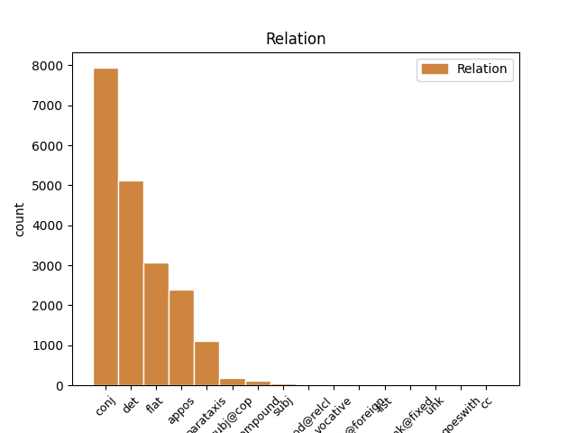
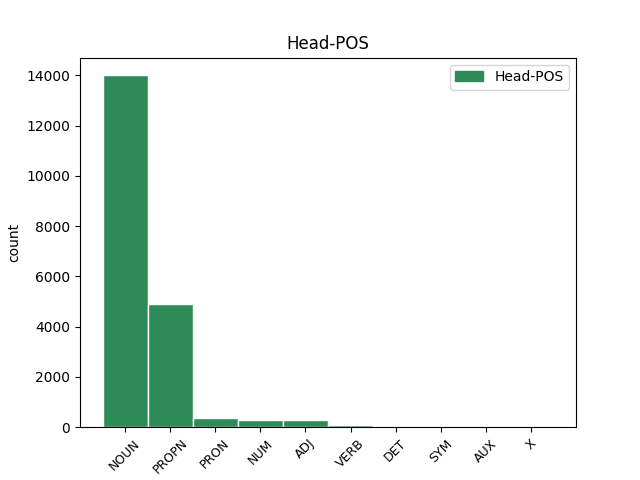
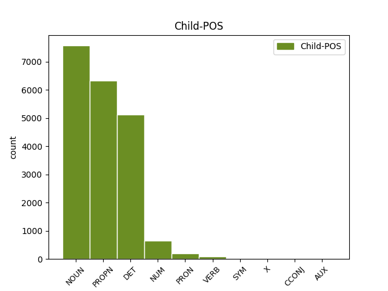

Distribution of features within this leaf



Agreement Rules sorted by frequency.
- When the dependent token is the conjunct(conj) of the head token, and the dependent token is NOUN.
1 Töötud _ _ _ _ 0 _ _ _
2 riiklikku _ _ _ _ 0 _ _ _
3 tööhõivetalitusse _ _ _ _ 0 _ _ _
4 pöördumise pöördumine NOUN S Case=Gen|Number=Sing 0 _ _ _
5 ja _ _ _ _ 0 _ _ _
6 mittepöördumise mitte_pöördumine NOUN S Case=Gen|Number=Sing 4 conj _ _
7 järgi _ _ _ _ 0 _ _ _
8 , _ _ _ _ 0 _ _ _
9 % _ _ _ _ 0 _ _ _
10 , _ _ _ _ 0 _ _ _
11 1995-2000 _ _ _ _ 0 _ _ _
1 2000. _ _ _ _ 0 _ _ _
2 a. _ _ _ _ 0 _ _ _
3 alguses _ _ _ _ 0 _ _ _
4 hakkas _ _ _ _ 0 _ _ _
5 väliskonjuktuur _ _ _ _ 0 _ _ _
6 ebasoodsamaks _ _ _ _ 0 _ _ _
7 muutuma _ _ _ _ 0 _ _ _
8 , _ _ _ _ 0 _ _ _
9 see see DET P Case=Nom|Number=Sing|PronType=Dem 10 det _ _
10 mõju mõju NOUN S Case=Nom|Number=Sing 0 _ _ _
11 ei _ _ _ _ 0 _ _ _
12 avaldunud _ _ _ _ 0 _ _ _
13 veel _ _ _ _ 0 _ _ _
14 ekspordimahus _ _ _ _ 0 _ _ _
15 ja _ _ _ _ 0 _ _ _
16 2000. _ _ _ _ 0 _ _ _
17 a. _ _ _ _ 0 _ _ _
18 oli _ _ _ _ 0 _ _ _
19 allhanke _ _ _ _ 0 _ _ _
20 ekspordi _ _ _ _ 0 _ _ _
21 osatähtsus _ _ _ _ 0 _ _ _
22 SKP-s _ _ _ _ 0 _ _ _
23 suur _ _ _ _ 0 _ _ _
24 . _ _ _ _ 0 _ _ _
1 Järgnevas _ _ _ _ 0 _ _ _
2 analüüsis _ _ _ _ 0 _ _ _
3 on _ _ _ _ 0 _ _ _
4 toetutud _ _ _ _ 0 _ _ _
5 ka _ _ _ _ 0 _ _ _
6 arutelu _ _ _ _ 0 _ _ _
7 tulemustele _ _ _ _ 0 _ _ _
8 , _ _ _ _ 0 _ _ _
9 mille _ _ _ _ 0 _ _ _
10 viisime _ _ _ _ 0 _ _ _
11 läbi _ _ _ _ 0 _ _ _
12 pärast _ _ _ _ 0 _ _ _
13 ettevõtete _ _ _ _ 0 _ _ _
14 andmete _ _ _ _ 0 _ _ _
15 ökonomeetrilist _ _ _ _ 0 _ _ _
16 analüüsi _ _ _ _ 0 _ _ _
17 mitmete _ _ _ _ 0 _ _ _
18 Eesti _ _ _ _ 0 _ _ _
19 juhtivate _ _ _ _ 0 _ _ _
20 majandusteadlastega _ _ _ _ 0 _ _ _
21 , _ _ _ _ 0 _ _ _
22 nagu _ _ _ _ 0 _ _ _
23 Teet _ _ _ _ 0 _ _ _
24 Rajasalu _ _ _ _ 0 _ _ _
25 , _ _ _ _ 0 _ _ _
26 Urmas _ _ _ _ 0 _ _ _
27 Varblane _ _ _ _ 0 _ _ _
28 , _ _ _ _ 0 _ _ _
29 Erik _ _ _ _ 0 _ _ _
30 Terk _ _ _ _ 0 _ _ _
31 , _ _ _ _ 0 _ _ _
32 Jaanus Jaanus PROPN S Case=Nom|Number=Sing 0 _ _ _
33 Raim Raim PROPN S Case=Nom|Number=Sing 32 flat _ _
34 jt _ _ _ _ 0 _ _ _
35 . _ _ _ _ 0 _ _ _
1 Ettevõtte _ _ _ _ 0 _ _ _
2 tulumaksuerisus _ _ _ _ 0 _ _ _
3 Eestis _ _ _ _ 0 _ _ _
4 on _ _ _ _ 0 _ _ _
5 tõenäoliselt _ _ _ _ 0 _ _ _
6 stiimul _ _ _ _ 0 _ _ _
7 Soome Soome PROPN S Case=Gen|Number=Sing 0 _ _ _
8 ja _ _ _ _ 0 _ _ _
9 Rootsi Rootsi PROPN S Case=Gen|Number=Sing 7 conj _ _
10 väike- _ _ _ _ 0 _ _ _
11 ja _ _ _ _ 0 _ _ _
12 keskmistele _ _ _ _ 0 _ _ _
13 ettevõtetele _ _ _ _ 0 _ _ _
14 , _ _ _ _ 0 _ _ _
15 kelle _ _ _ _ 0 _ _ _
16 potentsiaal _ _ _ _ 0 _ _ _
17 veel _ _ _ _ 0 _ _ _
18 odavamatele _ _ _ _ 0 _ _ _
19 ja _ _ _ _ 0 _ _ _
20 kaugemal _ _ _ _ 0 _ _ _
21 asuvatele _ _ _ _ 0 _ _ _
22 turgudele _ _ _ _ 0 _ _ _
23 liikuda _ _ _ _ 0 _ _ _
24 on _ _ _ _ 0 _ _ _
25 piiratud _ _ _ _ 0 _ _ _
26 . _ _ _ _ 0 _ _ _
1 Taoliste _ _ _ _ 0 _ _ _
2 konkurentsivõime _ _ _ _ 0 _ _ _
3 ligilähedaste _ _ _ _ 0 _ _ _
4 " _ _ _ _ 0 _ _ _
5 esindajatena _ _ _ _ 0 _ _ _
6 " _ _ _ _ 0 _ _ _
7 võiks _ _ _ _ 0 _ _ _
8 esimese _ _ _ _ 0 _ _ _
9 lähenemise _ _ _ _ 0 _ _ _
10 korras _ _ _ _ 0 _ _ _
11 vaadelda _ _ _ _ 0 _ _ _
12 TÜ _ _ _ _ 0 _ _ _
13 professor professor NOUN S Case=Nom|Number=Sing 0 _ _ _
14 Urmas Urmas PROPN S Case=Nom|Number=Sing 13 appos _ _
15 Varblase _ _ _ _ 0 _ _ _
16 uurimuses _ _ _ _ 0 _ _ _
17 " _ _ _ _ 0 _ _ _
18 Tootlikkus _ _ _ _ 0 _ _ _
19 " _ _ _ _ 0 _ _ _
20 ( _ _ _ _ 0 _ _ _
21 2001 _ _ _ _ 0 _ _ _
22 ) _ _ _ _ 0 _ _ _
23 kasutatud _ _ _ _ 0 _ _ _
24 näitajat _ _ _ _ 0 _ _ _
25 tootlikkuse _ _ _ _ 0 _ _ _
26 töötaja _ _ _ _ 0 _ _ _
27 kohta _ _ _ _ 0 _ _ _
28 ja _ _ _ _ 0 _ _ _
29 Eesti _ _ _ _ 0 _ _ _
30 Panga _ _ _ _ 0 _ _ _
31 ökonomisti _ _ _ _ 0 _ _ _
32 Martti _ _ _ _ 0 _ _ _
33 Randveere _ _ _ _ 0 _ _ _
34 töös _ _ _ _ 0 _ _ _
35 Eesti _ _ _ _ 0 _ _ _
36 majandusstruktuuri _ _ _ _ 0 _ _ _
37 konvergentsi _ _ _ _ 0 _ _ _
38 kohta _ _ _ _ 0 _ _ _
39 ( _ _ _ _ 0 _ _ _
40 2002 _ _ _ _ 0 _ _ _
41 ) _ _ _ _ 0 _ _ _
42 kasutatud _ _ _ _ 0 _ _ _
43 lisandväärtuse _ _ _ _ 0 _ _ _
44 ning _ _ _ _ 0 _ _ _
45 temaga _ _ _ _ 0 _ _ _
46 seonduvad _ _ _ _ 0 _ _ _
47 näitajad _ _ _ _ 0 _ _ _
48 . _ _ _ _ 0 _ _ _
1 Eesti _ _ _ _ 0 _ _ _
2 haridustase _ _ _ _ 0 _ _ _
3 : _ _ _ _ 0 _ _ _
4 esimene _ _ _ _ 0 _ _ _
5 tase _ _ _ _ 0 _ _ _
6 - _ _ _ _ 0 _ _ _
7 alg- _ _ _ _ 0 _ _ _
8 ja _ _ _ _ 0 _ _ _
9 põhiharidus _ _ _ _ 0 _ _ _
10 ; _ _ _ _ 0 _ _ _
11 teine _ _ _ _ 0 _ _ _
12 tase _ _ _ _ 0 _ _ _
13 - _ _ _ _ 0 _ _ _
14 keskharidus _ _ _ _ 0 _ _ _
15 , _ _ _ _ 0 _ _ _
16 kutseharidus _ _ _ _ 0 _ _ _
17 , _ _ _ _ 0 _ _ _
18 keskeriharidus _ _ _ _ 0 _ _ _
19 pärast _ _ _ _ 0 _ _ _
20 põhiharidust _ _ _ _ 0 _ _ _
21 ; _ _ _ _ 0 _ _ _
22 kolmas _ _ _ _ 0 _ _ _
23 tase tase NOUN S Case=Nom|Number=Sing 0 _ _ _
24 - _ _ _ _ 0 _ _ _
25 keskeriharidus kesk_eri_haridus NOUN S Case=Nom|Number=Sing 23 appos _ _
26 pärast _ _ _ _ 0 _ _ _
27 keskharidust _ _ _ _ 0 _ _ _
28 , _ _ _ _ 0 _ _ _
29 kõrgharidus _ _ _ _ 0 _ _ _
30 , _ _ _ _ 0 _ _ _
31 magistri- _ _ _ _ 0 _ _ _
32 ja _ _ _ _ 0 _ _ _
33 doktorikraad _ _ _ _ 0 _ _ _
34 . _ _ _ _ 0 _ _ _
1 Viimase _ _ _ _ 0 _ _ _
2 10 _ _ _ _ 0 _ _ _
3 aasta _ _ _ _ 0 _ _ _
4 jooksul _ _ _ _ 0 _ _ _
5 on _ _ _ _ 0 _ _ _
6 Eestis _ _ _ _ 0 _ _ _
7 tervikuna _ _ _ _ 0 _ _ _
8 valitsenud _ _ _ _ 0 _ _ _
9 märkimisväärne _ _ _ _ 0 _ _ _
10 negatiivne _ _ _ _ 0 _ _ _
11 korrelatsioon korrelatsioon NOUN S Case=Nom|Number=Sing 0 _ _ _
12 ( _ _ _ _ 0 _ _ _
13 -0,65 -0,65 NUM N Case=Nom|Number=Sing|NumType=Card 11 parataxis _ SpaceAfter=No
14 ) _ _ _ _ 0 _ _ _
15 inflatsiooni _ _ _ _ 0 _ _ _
16 ja _ _ _ _ 0 _ _ _
17 töötuse _ _ _ _ 0 _ _ _
18 vahel _ _ _ _ 0 _ _ _
19 . _ _ _ _ 0 _ _ _
1 Allikas allikas NOUN S Case=Nom|Number=Sing 0 _ _ _
2 : _ _ _ _ 0 _ _ _
3 ESA _ _ _ _ 0 _ _ _
4 teabenõue teabe_nõue NOUN S Case=Nom|Number=Sing 1 parataxis _ _
1 Allikad allikas NOUN S Case=Nom|Number=Plur 0 _ _ _
2 : _ _ _ _ 0 _ _ _
3 Eamets Ea_mets PROPN S Case=Nom|Number=Sing 1 parataxis _ SpaceAfter=No
4 , _ _ _ _ 0 _ _ _
5 2001 _ _ _ _ 0 _ _ _
6 ; _ _ _ _ 0 _ _ _
7 Rõõm _ _ _ _ 0 _ _ _
8 , _ _ _ _ 0 _ _ _
9 2002 _ _ _ _ 0 _ _ _
1 Positiivset _ _ _ _ 0 _ _ _
2 efekti _ _ _ _ 0 _ _ _
3 peaks _ _ _ _ 0 _ _ _
4 andma _ _ _ _ 0 _ _ _
5 kombinatsioon _ _ _ _ 0 _ _ _
6 kahest _ _ _ _ 0 _ _ _
7 tegurist _ _ _ _ 0 _ _ _
8 , _ _ _ _ 0 _ _ _
9 millest _ _ _ _ 0 _ _ _
10 üheks üks PRON P Case=Tra|Number=Sing|PronType=Ind 0 _ _ _
11 on _ _ _ _ 0 _ _ _
12 edu _ _ _ _ 0 _ _ _
13 EL _ _ _ _ 0 _ _ _
14 liitumisel _ _ _ _ 0 _ _ _
15 , _ _ _ _ 0 _ _ _
16 ja _ _ _ _ 0 _ _ _
17 teiseks teine PRON P Case=Tra|Number=Sing|PronType=Dem 10 conj _ _
18 Eesti _ _ _ _ 0 _ _ _
19 ettevõtete _ _ _ _ 0 _ _ _
20 tulumaksu _ _ _ _ 0 _ _ _
21 säilumine _ _ _ _ 0 _ _ _
22 , _ _ _ _ 0 _ _ _
23 vähemalt _ _ _ _ 0 _ _ _
24 esialgsel _ _ _ _ 0 _ _ _
25 perioodil _ _ _ _ 0 _ _ _
26 . _ _ _ _ 0 _ _ _
1 Iiri _ _ _ _ 0 _ _ _
2 majandusarengu _ _ _ _ 0 _ _ _
3 kogemus _ _ _ _ 0 _ _ _
4 1980. _ _ _ _ 0 _ _ _
5 aastate _ _ _ _ 0 _ _ _
6 teisel _ _ _ _ 0 _ _ _
7 poolel _ _ _ _ 0 _ _ _
8 näitas _ _ _ _ 0 _ _ _
9 , _ _ _ _ 0 _ _ _
10 et _ _ _ _ 0 _ _ _
11 makromajanduslikult _ _ _ _ 0 _ _ _
12 kriitilises _ _ _ _ 0 _ _ _
13 seisus _ _ _ _ 0 _ _ _
14 võib _ _ _ _ 0 _ _ _
15 tekkida _ _ _ _ 0 _ _ _
16 olukord _ _ _ _ 0 _ _ _
17 , _ _ _ _ 0 _ _ _
18 kus _ _ _ _ 0 _ _ _
19 palgataseme _ _ _ _ 0 _ _ _
20 tõusu _ _ _ _ 0 _ _ _
21 pidurdamise _ _ _ _ 0 _ _ _
22 poliitika _ _ _ _ 0 _ _ _
23 võib _ _ _ _ 0 _ _ _
24 osutuda _ _ _ _ 0 _ _ _
25 oluliseks _ _ _ _ 0 _ _ _
26 ( _ _ _ _ 0 _ _ _
27 kui _ _ _ _ 0 _ _ _
28 ei _ _ _ _ 0 _ _ _
29 tahetakse _ _ _ _ 0 _ _ _
30 minna _ _ _ _ 0 _ _ _
31 maksukoormuse _ _ _ _ 0 _ _ _
32 tõusule _ _ _ _ 0 _ _ _
33 ) _ _ _ _ 0 _ _ _
34 , _ _ _ _ 0 _ _ _
35 pidurdamaks pidurdama VERB V Case=Tra|VerbForm=Sup|Voice=Act 0 _ _ _
36 tööpuuduse _ _ _ _ 0 _ _ _
37 kasvu _ _ _ _ 0 _ _ _
38 ja _ _ _ _ 0 _ _ _
39 tasakaalustamaks tasa_kaalustama VERB V Case=Tra|VerbForm=Sup|Voice=Act 35 conj _ _
40 makromajanduslikult _ _ _ _ 0 _ _ _
41 ohtlikuks _ _ _ _ 0 _ _ _
42 muutunud _ _ _ _ 0 _ _ _
43 situatsiooni _ _ _ _ 0 _ _ _
44 . _ _ _ _ 0 _ _ _
1 2000. _ _ _ _ 0 _ _ _
2 a. _ _ _ _ 0 _ _ _
3 oli _ _ _ _ 0 _ _ _
4 kodumaise _ _ _ _ 0 _ _ _
5 käibe _ _ _ _ 0 _ _ _
6 osa _ _ _ _ 0 _ _ _
7 juba _ _ _ _ 0 _ _ _
8 olulisem _ _ _ _ 0 _ _ _
9 kui _ _ _ _ 0 _ _ _
10 1999. _ _ _ _ 0 _ _ _
11 a. _ _ _ _ 0 _ _ _
12 ja _ _ _ _ 0 _ _ _
13 väliskäibe _ _ _ _ 0 _ _ _
14 osa osa NOUN S Case=Nom|Number=Sing 17 subj@cop _ _
15 juba _ _ _ _ 0 _ _ _
16 vähem _ _ _ _ 0 _ _ _
17 oluline oluline ADJ A Case=Nom|Degree=Pos|Number=Sing 0 _ _ _
18 . _ _ _ _ 0 _ _ _
1 See _ _ _ _ 0 _ _ _
2 tähendab _ _ _ _ 0 _ _ _
3 , _ _ _ _ 0 _ _ _
4 et _ _ _ _ 0 _ _ _
5 täna _ _ _ _ 0 _ _ _
6 tuleb _ _ _ _ 0 _ _ _
7 Eesti _ _ _ _ 0 _ _ _
8 keskmise _ _ _ _ 0 _ _ _
9 palga _ _ _ _ 0 _ _ _
10 saajal _ _ _ _ 0 _ _ _
11 suurlinnakorteri _ _ _ _ 0 _ _ _
12 ostmiseks _ _ _ _ 0 _ _ _
13 sama _ _ _ _ 0 _ _ _
14 kaua _ _ _ _ 0 _ _ _
15 raha _ _ _ _ 0 _ _ _
16 koguda _ _ _ _ 0 _ _ _
17 kui _ _ _ _ 0 _ _ _
18 viis viis NUM N Case=Nom|Number=Sing|NumForm=Letter|NumType=Card 0 _ _ _
19 või _ _ _ _ 0 _ _ _
20 kümme kümme NUM N Case=Nom|Number=Sing|NumForm=Letter|NumType=Card 18 conj _ _
21 aastat _ _ _ _ 0 _ _ _
22 tagasi _ _ _ _ 0 _ _ _
23 . _ _ _ _ 0 _ _ _
1 2002. _ _ _ _ 0 _ _ _
2 a. _ _ _ _ 0 _ _ _
3 märtsis _ _ _ _ 0 _ _ _
4 võeti _ _ _ _ 0 _ _ _
5 vastu _ _ _ _ 0 _ _ _
6 " _ _ _ _ 0 _ _ _
7 The The PROPN S Case=Nom|Number=Sing 0 _ _ _
8 National _ _ _ _ 0 _ _ _
9 Plan _ _ _ _ 0 _ _ _
10 for for NOUN S Case=Nom|Number=Sing 7 flat _ _
11 Employment _ _ _ _ 0 _ _ _
12 " _ _ _ _ 0 _ _ _
13 , _ _ _ _ 0 _ _ _
14 mis _ _ _ _ 0 _ _ _
15 tundub _ _ _ _ 0 _ _ _
16 olevat _ _ _ _ 0 _ _ _
17 lühiajaline _ _ _ _ 0 _ _ _
18 kriisiprogramm _ _ _ _ 0 _ _ _
19 . _ _ _ _ 0 _ _ _
1 A. _ _ _ _ 0 _ _ _
2 Holdas _ _ _ _ 0 _ _ _
3 ja _ _ _ _ 0 _ _ _
4 K. _ _ _ _ 0 _ _ _
5 N. _ _ _ _ 0 _ _ _
6 May _ _ _ _ 0 _ _ _
7 ( _ _ _ _ 0 _ _ _
8 1966 _ _ _ _ 0 _ _ _
9 ) _ _ _ _ 0 _ _ _
10 täheldasid _ _ _ _ 0 _ _ _
11 , _ _ _ _ 0 _ _ _
12 et _ _ _ _ 0 _ _ _
13 kalamaitse _ _ _ _ 0 _ _ _
14 tekib _ _ _ _ 0 _ _ _
15 broilerilihale _ _ _ _ 0 _ _ _
16 15 _ _ _ _ 0 _ _ _
17 päeva _ _ _ _ 0 _ _ _
18 pärast _ _ _ _ 0 _ _ _
19 seda _ _ _ _ 0 _ _ _
20 , _ _ _ _ 0 _ _ _
21 kui _ _ _ _ 0 _ _ _
22 söödale _ _ _ _ 0 _ _ _
23 on _ _ _ _ 0 _ _ _
24 lisatud _ _ _ _ 0 _ _ _
25 2,5 2,5 NUM N Case=Nom|Number=Sing|NumForm=Digit|NumType=Card 26 compound _ _
26 % % SYM N Case=Nom|Number=Sing|NumForm=Digit|NumType=Card 0 _ _ _
27 kalaõli _ _ _ _ 0 _ _ _
28 . _ _ _ _ 0 _ _ _
1 Vabaks _ _ _ _ 0 _ _ _
2 jääb _ _ _ _ 0 _ _ _
3 vaid _ _ _ _ 0 _ _ _
4 veerg _ _ _ _ 0 _ _ _
5 8 _ _ _ _ 0 _ _ _
6 , _ _ _ _ 0 _ _ _
7 millel _ _ _ _ 0 _ _ _
8 keskmises _ _ _ _ 0 _ _ _
9 kolmikus _ _ _ _ 0 _ _ _
10 on _ _ _ _ 0 _ _ _
11 kaks _ _ _ _ 0 _ _ _
12 vaba _ _ _ _ 0 _ _ _
13 kohta _ _ _ _ 0 _ _ _
14 58 _ _ _ _ 0 _ _ _
15 ja _ _ _ _ 0 _ _ _
16 68 _ _ _ _ 0 _ _ _
17 , _ _ _ _ 0 _ _ _
18 kuid _ _ _ _ 0 _ _ _
19 kuuenda _ _ _ _ 0 _ _ _
20 rea _ _ _ _ 0 _ _ _
21 5 _ _ _ _ 0 _ _ _
22 jätab _ _ _ _ 0 _ _ _
23 alles _ _ _ _ 0 _ _ _
24 vaid _ _ _ _ 0 _ _ _
25 valiku _ _ _ _ 0 _ _ _
26 5 5 NUM N Case=Nom|Number=Sing|NumForm=Digit|NumType=Card 0 _ _ _
27 - _ _ _ _ 0 _ _ _
28 > _ _ _ _ 0 _ _ _
29 58 58 NUM N Case=Nom|Number=Sing|NumForm=Digit|NumType=Card 26 flat _ SpaceAfter=No
30 . _ _ _ _ 0 _ _ _
1 Esmalt _ _ _ _ 0 _ _ _
2 tasub _ _ _ _ 0 _ _ _
3 kohe _ _ _ _ 0 _ _ _
4 märkida _ _ _ _ 0 _ _ _
5 , _ _ _ _ 0 _ _ _
6 et _ _ _ _ 0 _ _ _
7 kui _ _ _ _ 0 _ _ _
8 paljud _ _ _ _ 0 _ _ _
9 artiklid _ _ _ _ 0 _ _ _
10 püüdsid _ _ _ _ 0 _ _ _
11 kummutada _ _ _ _ 0 _ _ _
12 mingil _ _ _ _ 0 _ _ _
13 ajahetkel _ _ _ _ 0 _ _ _
14 tekkinud _ _ _ _ 0 _ _ _
15 valearusaama _ _ _ _ 0 _ _ _
16 , _ _ _ _ 0 _ _ _
17 justkui _ _ _ _ 0 _ _ _
18 teadmushõive _ _ _ _ 0 _ _ _
19 andmebaasidest _ _ _ _ 0 _ _ _
20 oleks _ _ _ _ 0 _ _ _
21 sama _ _ _ _ 0 _ _ _
22 mis mis PRON P Case=Nom|Number=Sing|PronType=Int,Rel 23 subj@cop _ _
23 andmekaevandamine andme_kaevanda=mine NOUN S Case=Nom|Number=Sing 0 _ _ _
24 , _ _ _ _ 0 _ _ _
25 siis _ _ _ _ 0 _ _ _
26 [ _ _ _ _ 0 _ _ _
27 10 _ _ _ _ 0 _ _ _
28 ] _ _ _ _ 0 _ _ _
29 nullis _ _ _ _ 0 _ _ _
30 suures _ _ _ _ 0 _ _ _
31 osas _ _ _ _ 0 _ _ _
32 nende _ _ _ _ 0 _ _ _
33 tehtud _ _ _ _ 0 _ _ _
34 töö _ _ _ _ 0 _ _ _
35 . _ _ _ _ 0 _ _ _
1 Kalaõli _ _ _ _ 0 _ _ _
2 söötmise _ _ _ _ 0 _ _ _
3 mõju mõju NOUN S Case=Nom|Number=Sing 0 _ _ _
4 munarebu _ _ _ _ 0 _ _ _
5 ω-3-rasvhapete _ _ _ _ 0 _ _ _
6 sisaldusele _ _ _ _ 0 _ _ _
7 , _ _ _ _ 0 _ _ _
8 % % SYM N Case=Nom|Number=Sing|NumForm=Digit|NumType=Card 3 conj _ _
9 üldlipiididest _ _ _ _ 0 _ _ _
10 ( _ _ _ _ 0 _ _ _
11 Leeson _ _ _ _ 0 _ _ _
12 , _ _ _ _ 0 _ _ _
13 1999 _ _ _ _ 0 _ _ _
14 ) _ _ _ _ 0 _ _ _
1 Ühe üks DET P Case=Gen|Number=Sing|PronType=Ind 0 _ _ _
2 või _ _ _ _ 0 _ _ _
3 teise teine DET P Case=Gen|Number=Sing|PronType=Dem 1 conj _ _
4 suure _ _ _ _ 0 _ _ _
5 programmi _ _ _ _ 0 _ _ _
6 väljakuulutamine _ _ _ _ 0 _ _ _
7 pole _ _ _ _ 0 _ _ _
8 seejuures _ _ _ _ 0 _ _ _
9 tähendanud _ _ _ _ 0 _ _ _
10 muude _ _ _ _ 0 _ _ _
11 uuringute _ _ _ _ 0 _ _ _
12 piiramist _ _ _ _ 0 _ _ _
13 või _ _ _ _ 0 _ _ _
14 nende _ _ _ _ 0 _ _ _
15 vähem _ _ _ _ 0 _ _ _
16 tähtsaks _ _ _ _ 0 _ _ _
17 pidamist _ _ _ _ 0 _ _ _
18 . _ _ _ _ 0 _ _ _
1 " _ _ _ _ 0 _ _ _
2 Hea hea ADJ A Case=Nom|Degree=Pos|Number=Sing 0 _ _ _
3 küll _ _ _ _ 0 _ _ _
4 , _ _ _ _ 0 _ _ _
5 kallis kallis NOUN S Case=Nom|Number=Sing 2 vocative _ SpaceAfter=No
6 ! _ _ _ _ 0 _ _ _
1 Joonis joonis NOUN S Case=Nom|Number=Sing 4 subj _ _
2 3.6. _ _ _ _ 0 _ _ _
3 15-74aastased _ _ _ _ 0 _ _ _
4 mittetöötavad mitte_töötav ADJ A Case=Nom|Degree=Pos|Number=Plur|Tense=Pres|VerbForm=Part|Voice=Act 0 _ _ _
5 ( _ _ _ _ 0 _ _ _
6 töötud _ _ _ _ 0 _ _ _
7 ja _ _ _ _ 0 _ _ _
8 mitteaktiivsed _ _ _ _ 0 _ _ _
9 ) _ _ _ _ 0 _ _ _
10 viimaselt _ _ _ _ 0 _ _ _
11 töökohalt _ _ _ _ 0 _ _ _
12 lahkumise _ _ _ _ 0 _ _ _
13 põhjuse _ _ _ _ 0 _ _ _
14 järgi _ _ _ _ 0 _ _ _
15 , _ _ _ _ 0 _ _ _
16 1995-2001 _ _ _ _ 0 _ _ _
1 Mõtet _ _ _ _ 0 _ _ _
2 naiseni _ _ _ _ 0 _ _ _
3 arendades _ _ _ _ 0 _ _ _
4 jõudis _ _ _ _ 0 _ _ _
5 ta _ _ _ _ 0 _ _ _
6 korteri _ _ _ _ 0 _ _ _
7 number number NOUN S Case=Nom|Number=Sing 0 _ _ _
8 kuus kuus NUM N Case=Nom|Number=Sing|NumForm=Letter|NumType=Card 7 appos _ _
9 ukse _ _ _ _ 0 _ _ _
10 taha _ _ _ _ 0 _ _ _
11 ja _ _ _ _ 0 _ _ _
12 tardus _ _ _ _ 0 _ _ _
13 . _ _ _ _ 0 _ _ _
1 Veenus _ _ _ _ 0 _ _ _
2 oli _ _ _ _ 0 _ _ _
3 Istari _ _ _ _ 0 _ _ _
4 täht _ _ _ _ 0 _ _ _
5 ja _ _ _ _ 0 _ _ _
6 Jupiter Jupiter PROPN S Case=Nom|Number=Sing 9 subj@cop _ _
7 peajumal _ _ _ _ 0 _ _ _
8 Marduki _ _ _ _ 0 _ _ _
9 täht täht NOUN S Case=Nom|Number=Sing 0 _ _ _
10 . _ _ _ _ 0 _ _ _
1 Väikesed _ _ _ _ 0 _ _ _
2 projektisummad _ _ _ _ 0 _ _ _
3 annavad _ _ _ _ 0 _ _ _
4 võimaluse _ _ _ _ 0 _ _ _
5 midagi _ _ _ _ 0 _ _ _
6 teha _ _ _ _ 0 _ _ _
7 , _ _ _ _ 0 _ _ _
8 kogeda _ _ _ _ 0 _ _ _
9 ja _ _ _ _ 0 _ _ _
10 õppida _ _ _ _ 0 _ _ _
11 , _ _ _ _ 0 _ _ _
12 sellelt see PRON P Case=Abl|Number=Sing|PronType=Dem 13 det _ _
13 pinnalt pind NOUN S Case=Abl|Number=Sing 0 _ _ _
14 on _ _ _ _ 0 _ _ _
15 võimalik _ _ _ _ 0 _ _ _
16 edasi _ _ _ _ 0 _ _ _
17 minna _ _ _ _ 0 _ _ _
18 ja _ _ _ _ 0 _ _ _
19 lõpuks _ _ _ _ 0 _ _ _
20 kas _ _ _ _ 0 _ _ _
21 või _ _ _ _ 0 _ _ _
22 oma _ _ _ _ 0 _ _ _
23 firma _ _ _ _ 0 _ _ _
24 asutada _ _ _ _ 0 _ _ _
25 . _ _ _ _ 0 _ _ _
1 Töötuse _ _ _ _ 0 _ _ _
2 määr määr NOUN S Case=Nom|Number=Sing 0 _ _ _
3 , _ _ _ _ 0 _ _ _
4 15-74. _ _ _ _ 0 _ _ _
5 a. _ _ _ _ 0 _ _ _
6 , _ _ _ _ 0 _ _ _
7 1989-2001 _ _ _ _ 0 _ _ _
8 , _ _ _ _ 0 _ _ _
9 % % SYM N Case=Nom|Number=Sing|NumForm=Digit|NumType=Card 2 parataxis _ _
10 ( _ _ _ _ 0 _ _ _
11 aastakeskmine _ _ _ _ 0 _ _ _
12 ) _ _ _ _ 0 _ _ _
1 M. _ _ _ _ 0 _ _ _
2 Herodes _ _ _ _ 0 _ _ _
3 leidis _ _ _ _ 0 _ _ _
4 , _ _ _ _ 0 _ _ _
5 et _ _ _ _ 0 _ _ _
6 Eesti _ _ _ _ 0 _ _ _
7 epilepsiahaigetel _ _ _ _ 0 _ _ _
8 on _ _ _ _ 0 _ _ _
9 kõrge _ _ _ _ 0 _ _ _
10 stigmatiseerituse _ _ _ _ 0 _ _ _
11 aste _ _ _ _ 0 _ _ _
12 ( _ _ _ _ 0 _ _ _
13 kr _ _ _ _ 0 _ _ _
14 stigma stigma NOUN S Case=Nom|Number=Sing 0 _ _ _
15 'arm arm NOUN S Case=Nom|Number=Sing 14 mod@relcl _ SpaceAfter=No
16 , _ _ _ _ 0 _ _ _
17 märk' _ _ _ _ 0 _ _ _
18 ) _ _ _ _ 0 _ _ _
19 ja _ _ _ _ 0 _ _ _
20 madal _ _ _ _ 0 _ _ _
21 hinnang _ _ _ _ 0 _ _ _
22 oma _ _ _ _ 0 _ _ _
23 tervislikule _ _ _ _ 0 _ _ _
24 seisundile _ _ _ _ 0 _ _ _
25 korrelatsioonis _ _ _ _ 0 _ _ _
26 hoogude _ _ _ _ 0 _ _ _
27 sageduse _ _ _ _ 0 _ _ _
28 ja _ _ _ _ 0 _ _ _
29 -tüübiga _ _ _ _ 0 _ _ _
30 ( _ _ _ _ 0 _ _ _
31 4 _ _ _ _ 0 _ _ _
32 ) _ _ _ _ 0 _ _ _
33 . _ _ _ _ 0 _ _ _
1 Liikumiste _ _ _ _ 0 _ _ _
2 tõenäosused _ _ _ _ 0 _ _ _
3 : _ _ _ _ 0 _ _ _
4 ee _ _ _ _ 0 _ _ _
5 - _ _ _ _ 0 _ _ _
6 töölt _ _ _ _ 0 _ _ _
7 tööle _ _ _ _ 0 _ _ _
8 , _ _ _ _ 0 _ _ _
9 UE _ _ _ _ 0 _ _ _
10 - _ _ _ _ 0 _ _ _
11 töötus töötus NOUN S Case=Nom|Number=Sing 0 _ _ _
12 -hõive hõive NOUN S Case=Nom|Number=Sing 11 compound _ SpaceAfter=No
13 , _ _ _ _ 0 _ _ _
14 UI _ _ _ _ 0 _ _ _
15 - _ _ _ _ 0 _ _ _
16 töötus-mitteaktiivsus _ _ _ _ 0 _ _ _
17 , _ _ _ _ 0 _ _ _
18 IE _ _ _ _ 0 _ _ _
19 - _ _ _ _ 0 _ _ _
20 mitteaktiivsus-hõive _ _ _ _ 0 _ _ _
21 , _ _ _ _ 0 _ _ _
22 IU _ _ _ _ 0 _ _ _
23 - _ _ _ _ 0 _ _ _
24 mitteaktiivsus-töötus _ _ _ _ 0 _ _ _
25 , _ _ _ _ 0 _ _ _
26 EI _ _ _ _ 0 _ _ _
27 - _ _ _ _ 0 _ _ _
28 hõive-mitteaktiivsus _ _ _ _ 0 _ _ _
29 , _ _ _ _ 0 _ _ _
30 EU _ _ _ _ 0 _ _ _
31 - _ _ _ _ 0 _ _ _
32 hõive-töötus _ _ _ _ 0 _ _ _
1 Bronhoskoopiline _ _ _ _ 0 _ _ _
2 leid _ _ _ _ 0 _ _ _
3 trahheobronhiaalse _ _ _ _ 0 _ _ _
4 amüloidoosiga _ _ _ _ 0 _ _ _
5 patsiendil _ _ _ _ 0 _ _ _
6 ( _ _ _ _ 0 _ _ _
7 sama _ _ _ _ 0 _ _ _
8 patsient patsient NOUN S Case=Nom|Number=Sing 0 _ _ _
9 , _ _ _ _ 0 _ _ _
10 kes kes PRON P Case=Nom|Number=Sing|PronType=Int,Rel 8 mod@relcl _ _
11 joonisel _ _ _ _ 0 _ _ _
12 2 _ _ _ _ 0 _ _ _
13 ) _ _ _ _ 0 _ _ _
14 . _ _ _ _ 0 _ _ _
1 Kui _ _ _ _ 0 _ _ _
2 vererõhu _ _ _ _ 0 _ _ _
3 selliste _ _ _ _ 0 _ _ _
4 väärtuste _ _ _ _ 0 _ _ _
5 korral _ _ _ _ 0 _ _ _
6 mõõta _ _ _ _ 0 _ _ _
7 tegelikust _ _ _ _ 0 _ _ _
8 5 _ _ _ _ 0 _ _ _
9 mm _ _ _ _ 0 _ _ _
10 Hg _ _ _ _ 0 _ _ _
11 madalam _ _ _ _ 0 _ _ _
12 rõhk _ _ _ _ 0 _ _ _
13 , _ _ _ _ 0 _ _ _
14 siis _ _ _ _ 0 _ _ _
15 tooks _ _ _ _ 0 _ _ _
16 see _ _ _ _ 0 _ _ _
17 USAs _ _ _ _ 0 _ _ _
18 kaasa _ _ _ _ 0 _ _ _
19 21 _ _ _ _ 0 _ _ _
20 miljoni _ _ _ _ 0 _ _ _
21 inimese _ _ _ _ 0 _ _ _
22 ravita _ _ _ _ 0 _ _ _
23 jätmise _ _ _ _ 0 _ _ _
24 , _ _ _ _ 0 _ _ _
25 samal sama DET P Case=Ade|Number=Sing|PronType=Dem 0 _ _ _
26 ajal aeg NOUN S Case=Ade|Number=Sing 25 unk@fixed _ _
27 kui _ _ _ _ 0 _ _ _
28 nihe _ _ _ _ 0 _ _ _
29 vastassuunas _ _ _ _ 0 _ _ _
30 allutaks _ _ _ _ 0 _ _ _
31 ravile _ _ _ _ 0 _ _ _
32 27 _ _ _ _ 0 _ _ _
33 miljonit _ _ _ _ 0 _ _ _
34 normotoonikut _ _ _ _ 0 _ _ _
35 ( _ _ _ _ 0 _ _ _
36 1 _ _ _ _ 0 _ _ _
37 ) _ _ _ _ 0 _ _ _
38 . _ _ _ _ 0 _ _ _
1 Töö _ _ _ _ 0 _ _ _
2 ajaline _ _ _ _ 0 _ _ _
3 paindlikkus _ _ _ _ 0 _ _ _
4 väljendub _ _ _ _ 0 _ _ _
5 tööturu _ _ _ _ 0 _ _ _
6 parameetrites _ _ _ _ 0 _ _ _
7 nagu _ _ _ _ 0 _ _ _
8 : _ _ _ _ 0 _ _ _
9 · _ _ _ _ 0 _ _ _
10 täis- _ _ _ _ 0 _ _ _
11 ja _ _ _ _ 0 _ _ _
12 osaajaga _ _ _ _ 0 _ _ _
13 töö töö NOUN S Case=Nom|Number=Sing 0 _ _ _
14 ; _ _ _ _ 0 _ _ _
15 osaajaga _ _ _ _ 0 _ _ _
16 töötamise _ _ _ _ 0 _ _ _
17 põhjused _ _ _ _ 0 _ _ _
18 · _ _ _ _ 0 _ _ _
19 kõrvaltöö _ _ _ _ 0 _ _ _
20 · _ _ _ _ 0 _ _ _
21 tööaeg _ _ _ _ 0 _ _ _
22 ; _ _ _ _ 0 _ _ _
23 rohkem _ _ _ _ 0 _ _ _
24 ja _ _ _ _ 0 _ _ _
25 vähem _ _ _ _ 0 _ _ _
26 töötamine _ _ _ _ 0 _ _ _
27 ja _ _ _ _ 0 _ _ _
28 nende _ _ _ _ 0 _ _ _
29 põhjused _ _ _ _ 0 _ _ _
30 · _ _ _ _ 0 _ _ _
31 alaline _ _ _ _ 0 _ _ _
32 ja _ _ _ _ 0 _ _ _
33 ajutine _ _ _ _ 0 _ _ _
34 töö _ _ _ _ 0 _ _ _
35 · _ _ _ _ 0 _ _ _
36 vaheajad vahe_aeg NOUN S Case=Nom|Number=Plur 13 list _ _
37 töötamises _ _ _ _ 0 _ _ _
38 · _ _ _ _ 0 _ _ _
39 jt _ _ _ _ 0 _ _ _
1 Värske _ _ _ _ 0 _ _ _
2 kapsas _ _ _ _ 0 _ _ _
3 maksab _ _ _ _ 0 _ _ _
4 Keskturul _ _ _ _ 0 _ _ _
5 4.50 _ _ _ _ 0 _ _ _
6 ning _ _ _ _ 0 _ _ _
7 porgand _ _ _ _ 0 _ _ _
8 ja _ _ _ _ 0 _ _ _
9 peet _ _ _ _ 0 _ _ _
10 6 _ _ _ _ 0 _ _ _
11 kr _ _ _ _ 0 _ _ _
12 , _ _ _ _ 0 _ _ _
13 mõlemad mõlema PRON P Case=Nom|Number=Plur|PronType=Tot 18 subj _ _
14 1 _ _ _ _ 0 _ _ _
15 kr _ _ _ _ 0 _ _ _
16 kilo _ _ _ _ 0 _ _ _
17 kohta _ _ _ _ 0 _ _ _
18 kallimad kallim NOUN S Case=Nom|Number=Plur 0 _ _ _
19 kui _ _ _ _ 0 _ _ _
20 möödunud _ _ _ _ 0 _ _ _
21 aastal _ _ _ _ 0 _ _ _
22 . _ _ _ _ 0 _ _ _
1 " _ _ _ _ 0 _ _ _
2 Hea hea ADJ A Case=Nom|Degree=Pos|Number=Sing 0 _ _ _
3 küll _ _ _ _ 0 _ _ _
4 , _ _ _ _ 0 _ _ _
5 Tamur Tamur PROPN S Case=Nom|Number=Sing 2 vocative _ SpaceAfter=No
6 , _ _ _ _ 0 _ _ _
7 " _ _ _ _ 0 _ _ _
8 ütles _ _ _ _ 0 _ _ _
9 Kala _ _ _ _ 0 _ _ _
10 ja _ _ _ _ 0 _ _ _
11 vinnas _ _ _ _ 0 _ _ _
12 oma _ _ _ _ 0 _ _ _
13 luise _ _ _ _ 0 _ _ _
14 kere _ _ _ _ 0 _ _ _
15 püsti _ _ _ _ 0 _ _ _
16 , _ _ _ _ 0 _ _ _
17 " _ _ _ _ 0 _ _ _
18 kus _ _ _ _ 0 _ _ _
19 toas _ _ _ _ 0 _ _ _
20 me _ _ _ _ 0 _ _ _
21 kaarte _ _ _ _ 0 _ _ _
22 mängime _ _ _ _ 0 _ _ _
23 , _ _ _ _ 0 _ _ _
24 kas _ _ _ _ 0 _ _ _
25 meil _ _ _ _ 0 _ _ _
26 või _ _ _ _ 0 _ _ _
27 teil _ _ _ _ 0 _ _ _
28 ? _ _ _ _ 0 _ _ _
1 Parem parem ADJ A Case=Nom|Degree=Cmp|Number=Sing 0 _ _ _
2 üks üks NUM N Case=Nom|Number=Sing|NumForm=Letter|NumType=Card 1 subj@cop _ _
3 kui _ _ _ _ 0 _ _ _
4 mitu _ _ _ _ 0 _ _ _
5 . _ _ _ _ 0 _ _ _
1 Kui _ _ _ _ 0 _ _ _
2 “ _ _ _ _ 0 _ _ _
3 saadud _ _ _ _ 0 _ _ _
4 arv _ _ _ _ 0 _ _ _
5 ” _ _ _ _ 0 _ _ _
6 on _ _ _ _ 0 _ _ _
7 võrdne _ _ _ _ 0 _ _ _
8 puhasväärtusega _ _ _ _ 0 _ _ _
9 ehk _ _ _ _ 0 _ _ _
10 varade _ _ _ _ 0 _ _ _
11 väärtusega _ _ _ _ 0 _ _ _
12 , _ _ _ _ 0 _ _ _
13 millest _ _ _ _ 0 _ _ _
14 on _ _ _ _ 0 _ _ _
15 lahutatud _ _ _ _ 0 _ _ _
16 võlad _ _ _ _ 0 _ _ _
17 pluss pluss NOUN S Case=Nom|Number=Sing 19 unk _ _
18 päritud _ _ _ _ 0 _ _ _
19 vara vara NOUN S Case=Nom|Number=Sing 0 _ _ _
20 , _ _ _ _ 0 _ _ _
21 siis _ _ _ _ 0 _ _ _
22 on _ _ _ _ 0 _ _ _
23 tegemist _ _ _ _ 0 _ _ _
24 keskmise _ _ _ _ 0 _ _ _
25 säästjaga _ _ _ _ 0 _ _ _
26 . _ _ _ _ 0 _ _ _
1 Muuseas _ _ _ _ 0 _ _ _
2 , _ _ _ _ 0 _ _ _
3 sellesse _ _ _ _ 0 _ _ _
4 seltskonda _ _ _ _ 0 _ _ _
5 kuulub _ _ _ _ 0 _ _ _
6 palju _ _ _ _ 0 _ _ _
7 vanglakunstnikke vangla_kunstnik NOUN S Case=Par|Number=Plur 0 _ _ _
8 - _ _ _ _ 0 _ _ _
9 neid tema PRON P Case=Par|Number=Plur|Person=3|PronType=Prs 7 appos _ SpaceAfter=No
10 , _ _ _ _ 0 _ _ _
11 kes _ _ _ _ 0 _ _ _
12 vangistuses _ _ _ _ 0 _ _ _
13 midagi _ _ _ _ 0 _ _ _
14 loovad _ _ _ _ 0 _ _ _
15 , _ _ _ _ 0 _ _ _
16 oma _ _ _ _ 0 _ _ _
17 kätega _ _ _ _ 0 _ _ _
18 valmistavad _ _ _ _ 0 _ _ _
19 . _ _ _ _ 0 _ _ _
1 CFG _ _ _ _ 0 _ _ _
2 esitab _ _ _ _ 0 _ _ _
3 orienteeritud _ _ _ _ 0 _ _ _
4 graafi _ _ _ _ 0 _ _ _
5 , _ _ _ _ 0 _ _ _
6 mille _ _ _ _ 0 _ _ _
7 tippudeks _ _ _ _ 0 _ _ _
8 on _ _ _ _ 0 _ _ _
9 programmi _ _ _ _ 0 _ _ _
10 baas- _ _ _ _ 0 _ _ _
11 ehk _ _ _ _ 0 _ _ _
12 põhiplokid _ _ _ _ 0 _ _ _
13 ( _ _ _ _ 0 _ _ _
14 basic basic X S Case=Nom|Number=Sing 0 _ _ _
15 block block X S Case=Nom|Number=Sing 14 flat@foreign _ SpaceAfter=No
16 ) _ _ _ _ 0 _ _ _
17 . _ _ _ _ 0 _ _ _
1 Et _ _ _ _ 0 _ _ _
2 Eesti _ _ _ _ 0 _ _ _
3 tehnoloogiakesksete _ _ _ _ 0 _ _ _
4 eksportharude _ _ _ _ 0 _ _ _
5 osas _ _ _ _ 0 _ _ _
6 on _ _ _ _ 0 _ _ _
7 toimunud _ _ _ _ 0 _ _ _
8 oluline _ _ _ _ 0 _ _ _
9 nihe _ _ _ _ 0 _ _ _
10 hinnatasemes _ _ _ _ 0 _ _ _
11 ( _ _ _ _ 0 _ _ _
12 unit unit NOUN S Case=Nom|Number=Sing 0 _ _ _
13 value value NOUN S Case=Nom|Number=Sing 12 flat@foreign _ _
14 ratio _ _ _ _ 0 _ _ _
15 ) _ _ _ _ 0 _ _ _
16 on _ _ _ _ 0 _ _ _
17 nende _ _ _ _ 0 _ _ _
18 harude _ _ _ _ 0 _ _ _
19 puhul _ _ _ _ 0 _ _ _
20 Eestist _ _ _ _ 0 _ _ _
21 EL-i _ _ _ _ 0 _ _ _
22 liikuva _ _ _ _ 0 _ _ _
23 toodangu _ _ _ _ 0 _ _ _
24 hind _ _ _ _ 0 _ _ _
25 ( _ _ _ _ 0 _ _ _
26 kui _ _ _ _ 0 _ _ _
27 usaldada _ _ _ _ 0 _ _ _
28 viidatud _ _ _ _ 0 _ _ _
29 uuringut _ _ _ _ 0 _ _ _
30 ) _ _ _ _ 0 _ _ _
31 kujunenud _ _ _ _ 0 _ _ _
32 juba _ _ _ _ 0 _ _ _
33 keskelt _ _ _ _ 0 _ _ _
34 läbi _ _ _ _ 0 _ _ _
35 kõrgemaks _ _ _ _ 0 _ _ _
36 kui _ _ _ _ 0 _ _ _
37 taolise _ _ _ _ 0 _ _ _
38 toodangu _ _ _ _ 0 _ _ _
39 keskmine _ _ _ _ 0 _ _ _
40 EL-i _ _ _ _ 0 _ _ _
41 sisseostmise _ _ _ _ 0 _ _ _
42 hind _ _ _ _ 0 _ _ _
43 . _ _ _ _ 0 _ _ _
1 Kommunismist _ _ _ _ 0 _ _ _
2 vabanenud _ _ _ _ 0 _ _ _
3 riikide _ _ _ _ 0 _ _ _
4 kogemus _ _ _ _ 0 _ _ _
5 näitab _ _ _ _ 0 _ _ _
6 , _ _ _ _ 0 _ _ _
7 et _ _ _ _ 0 _ _ _
8 erastamine _ _ _ _ 0 _ _ _
9 peab _ _ _ _ 0 _ _ _
10 toimuma toimuma VERB V Case=Ill|VerbForm=Sup|Voice=Act 0 _ _ _
11 ühtse _ _ _ _ 0 _ _ _
12 strateegia _ _ _ _ 0 _ _ _
13 järgi _ _ _ _ 0 _ _ _
14 ning _ _ _ _ 0 _ _ _
15 olema olema AUX V Case=Ill|VerbForm=Sup|Voice=Act 10 conj _ _
16 suunatud _ _ _ _ 0 _ _ _
17 riigi _ _ _ _ 0 _ _ _
18 majanduskasvu _ _ _ _ 0 _ _ _
19 edendamisele _ _ _ _ 0 _ _ _
20 . _ _ _ _ 0 _ _ _
1 CFG _ _ _ _ 0 _ _ _
2 esitab _ _ _ _ 0 _ _ _
3 orienteeritud _ _ _ _ 0 _ _ _
4 graafi _ _ _ _ 0 _ _ _
5 , _ _ _ _ 0 _ _ _
6 mille _ _ _ _ 0 _ _ _
7 tippudeks _ _ _ _ 0 _ _ _
8 on _ _ _ _ 0 _ _ _
9 programmi _ _ _ _ 0 _ _ _
10 baas- _ _ _ _ 0 _ _ _
11 ehk _ _ _ _ 0 _ _ _
12 põhiplokid põhi_plokk NOUN S Case=Nom|Number=Plur 0 _ _ _
13 ( _ _ _ _ 0 _ _ _
14 basic basic X S Case=Nom|Number=Sing 12 appos _ _
15 block _ _ _ _ 0 _ _ _
16 ) _ _ _ _ 0 _ _ _
17 . _ _ _ _ 0 _ _ _
1 Väitekirja _ _ _ _ 0 _ _ _
2 avalik _ _ _ _ 0 _ _ _
3 kaitsmine _ _ _ _ 0 _ _ _
4 toimub _ _ _ _ 0 _ _ _
5 11. _ _ _ _ 0 _ _ _
6 juunil _ _ _ _ 0 _ _ _
7 2004. _ _ _ _ 0 _ _ _
8 a. _ _ _ _ 0 _ _ _
9 algusega _ _ _ _ 0 _ _ _
10 kell _ _ _ _ 0 _ _ _
11 11.00 _ _ _ _ 0 _ _ _
12 Eesti _ _ _ _ 0 _ _ _
13 Põllumajandusülikooli _ _ _ _ 0 _ _ _
14 Loomakasvatusinstituudi _ _ _ _ 0 _ _ _
15 teadusnõukogu _ _ _ _ 0 _ _ _
16 saalis _ _ _ _ 0 _ _ _
17 ( _ _ _ _ 0 _ _ _
18 Tartu Tartu PROPN S Case=Gen|Number=Sing 0 _ _ _
19 , _ _ _ _ 0 _ _ _
20 Kreutzwaldi Kreutzwald PROPN S Case=Gen|Number=Sing 18 list _ _
21 1 _ _ _ _ 0 _ _ _
22 ) _ _ _ _ 0 _ _ _
1 On _ _ _ _ 0 _ _ _
2 tehtud _ _ _ _ 0 _ _ _
3 juba _ _ _ _ 0 _ _ _
4 ka _ _ _ _ 0 _ _ _
5 esimesi _ _ _ _ 0 _ _ _
6 katseid _ _ _ _ 0 _ _ _
7 eikosapentaeenhappe _ _ _ _ 0 _ _ _
8 mikrobioloogiliseks _ _ _ _ 0 _ _ _
9 sünteesiks _ _ _ _ 0 _ _ _
10 Mortirella Mortirella PROPN S Case=Gen|Number=Sing 0 _ _ _
11 fungi fungi X S Case=Gen|Number=Sing 10 flat _ _
12 abil _ _ _ _ 0 _ _ _
13 ( _ _ _ _ 0 _ _ _
14 Leman _ _ _ _ 0 _ _ _
15 , _ _ _ _ 0 _ _ _
16 1993 _ _ _ _ 0 _ _ _
17 ) _ _ _ _ 0 _ _ _
18 . _ _ _ _ 0 _ _ _
1 Hingamiselundite _ _ _ _ 0 _ _ _
2 amüloidoosi _ _ _ _ 0 _ _ _
3 sündroomid _ _ _ _ 0 _ _ _
4 ( _ _ _ _ 0 _ _ _
5 Gillmore Gillmore PROPN S Case=Nom|Number=Sing 0 _ _ _
6 & _ _ _ _ 0 _ _ _
7 Hawkins Hawkins PROPN S Case=Nom|Number=Sing 5 goeswith _ SpaceAfter=No
8 , _ _ _ _ 0 _ _ _
9 1999 _ _ _ _ 0 _ _ _
10 ) _ _ _ _ 0 _ _ _
1 Angloameerika _ _ _ _ 0 _ _ _
2 ja _ _ _ _ 0 _ _ _
3 Euroopa _ _ _ _ 0 _ _ _
4 ülikoolides _ _ _ _ 0 _ _ _
5 loetakse _ _ _ _ 0 _ _ _
6 taolisi _ _ _ _ 0 _ _ _
7 kursusi _ _ _ _ 0 _ _ _
8 pealkirjade _ _ _ _ 0 _ _ _
9 " _ _ _ _ 0 _ _ _
10 Earth _ _ _ _ 0 _ _ _
11 science _ _ _ _ 0 _ _ _
12 " _ _ _ _ 0 _ _ _
13 või _ _ _ _ 0 _ _ _
14 " _ _ _ _ 0 _ _ _
15 Understanding Understanding PROPN S Case=Nom|Number=Sing 0 _ _ _
16 the _ _ _ _ 0 _ _ _
17 Earth Earth PROPN S Case=Nom|Number=Sing 15 flat@foreign _ SpaceAfter=No
18 " _ _ _ _ 0 _ _ _
19 all _ _ _ _ 0 _ _ _
20 . _ _ _ _ 0 _ _ _
1 Ehitistesse _ _ _ _ 0 _ _ _
2 investeerimine _ _ _ _ 0 _ _ _
3 annab _ _ _ _ 0 _ _ _
4 kiirema _ _ _ _ 0 _ _ _
5 kasvu _ _ _ _ 0 _ _ _
6 ( _ _ _ _ 0 _ _ _
7 aastase _ _ _ _ 0 _ _ _
8 viitajaga _ _ _ _ 0 _ _ _
9 ) _ _ _ _ 0 _ _ _
10 ka _ _ _ _ 0 _ _ _
11 juhul _ _ _ _ 0 _ _ _
12 , _ _ _ _ 0 _ _ _
13 kui _ _ _ _ 0 _ _ _
14 jagada _ _ _ _ 0 _ _ _
15 ettevõtted ette_võte NOUN S Case=Nom|Number=Plur 0 _ _ _
16 neljaks _ _ _ _ 0 _ _ _
17 grupiks _ _ _ _ 0 _ _ _
18 ( _ _ _ _ 0 _ _ _
19 need see PRON P Case=Nom|Number=Plur|PronType=Dem 15 parataxis _ SpaceAfter=No
20 , _ _ _ _ 0 _ _ _
21 kes _ _ _ _ 0 _ _ _
22 on _ _ _ _ 0 _ _ _
23 investeerinud _ _ _ _ 0 _ _ _
24 nii _ _ _ _ 0 _ _ _
25 ehitistesse _ _ _ _ 0 _ _ _
26 kui _ _ _ _ 0 _ _ _
27 masinatesse _ _ _ _ 0 _ _ _
28 ; _ _ _ _ 0 _ _ _
29 need _ _ _ _ 0 _ _ _
30 , _ _ _ _ 0 _ _ _
31 kes _ _ _ _ 0 _ _ _
32 on _ _ _ _ 0 _ _ _
33 investeerinud _ _ _ _ 0 _ _ _
34 ainult _ _ _ _ 0 _ _ _
35 masinatesse _ _ _ _ 0 _ _ _
36 ; _ _ _ _ 0 _ _ _
37 need _ _ _ _ 0 _ _ _
38 , _ _ _ _ 0 _ _ _
39 kes _ _ _ _ 0 _ _ _
40 on _ _ _ _ 0 _ _ _
41 investeerinud _ _ _ _ 0 _ _ _
42 ainult _ _ _ _ 0 _ _ _
43 ehitistesse _ _ _ _ 0 _ _ _
44 ning _ _ _ _ 0 _ _ _
45 need _ _ _ _ 0 _ _ _
46 , _ _ _ _ 0 _ _ _
47 kes _ _ _ _ 0 _ _ _
48 ei _ _ _ _ 0 _ _ _
49 ole _ _ _ _ 0 _ _ _
50 investeerinud _ _ _ _ 0 _ _ _
51 ei _ _ _ _ 0 _ _ _
52 ehitistesse _ _ _ _ 0 _ _ _
53 ega _ _ _ _ 0 _ _ _
54 ka _ _ _ _ 0 _ _ _
55 masinatesse _ _ _ _ 0 _ _ _
56 ) _ _ _ _ 0 _ _ _
57 . _ _ _ _ 0 _ _ _
Disagree Examples:
1 Hansapanga _ _ _ _ 0 _ _ _
2 suurim _ _ _ _ 0 _ _ _
3 kahtlusalune _ _ _ _ 0 _ _ _
4 tehing _ _ _ _ 0 _ _ _
5 seondub _ _ _ _ 0 _ _ _
6 Zürichis _ _ _ _ 0 _ _ _
7 asuva _ _ _ _ 0 _ _ _
8 Cantrade Cantrade PROPN S Case=Nom|Number=Sing 0 _ _ _
9 Private _ _ _ _ 0 _ _ _
10 Bankiga Bank PROPN S Case=Com|Number=Sing 8 flat _ SpaceAfter=No
11 . _ _ _ _ 0 _ _ _
1 Juuli _ _ _ _ 0 _ _ _
2 lõpus _ _ _ _ 0 _ _ _
3 1997 _ _ _ _ 0 _ _ _
4 läks _ _ _ _ 0 _ _ _
5 Cantradest _ _ _ _ 0 _ _ _
6 mitmes mitmes DET P Case=Nom|Number=Sing|PronType=Int,Rel 7 det _ _
7 osas osa NOUN S Case=Ine|Number=Sing 0 _ _ _
8 teele _ _ _ _ 0 _ _ _
9 kokku _ _ _ _ 0 _ _ _
10 ligi _ _ _ _ 0 _ _ _
11 50 _ _ _ _ 0 _ _ _
12 miljonit _ _ _ _ 0 _ _ _
13 dollarit _ _ _ _ 0 _ _ _
14 ehk _ _ _ _ 0 _ _ _
15 üle _ _ _ _ 0 _ _ _
16 700 _ _ _ _ 0 _ _ _
17 miljoni _ _ _ _ 0 _ _ _
18 krooni _ _ _ _ 0 _ _ _
19 . _ _ _ _ 0 _ _ _
1 Juuli _ _ _ _ 0 _ _ _
2 lõpus _ _ _ _ 0 _ _ _
3 1997 _ _ _ _ 0 _ _ _
4 läks _ _ _ _ 0 _ _ _
5 Cantradest _ _ _ _ 0 _ _ _
6 mitmes _ _ _ _ 0 _ _ _
7 osas _ _ _ _ 0 _ _ _
8 teele _ _ _ _ 0 _ _ _
9 kokku _ _ _ _ 0 _ _ _
10 ligi _ _ _ _ 0 _ _ _
11 50 _ _ _ _ 0 _ _ _
12 miljonit _ _ _ _ 0 _ _ _
13 dollarit dollar NOUN S Case=Par|Number=Sing 0 _ _ _
14 ehk _ _ _ _ 0 _ _ _
15 üle _ _ _ _ 0 _ _ _
16 700 _ _ _ _ 0 _ _ _
17 miljoni _ _ _ _ 0 _ _ _
18 krooni kroon NOUN S Case=Gen|Number=Sing 13 conj _ SpaceAfter=No
19 . _ _ _ _ 0 _ _ _
1 Esmalt _ _ _ _ 0 _ _ _
2 liikus _ _ _ _ 0 _ _ _
3 see _ _ _ _ 0 _ _ _
4 raha _ _ _ _ 0 _ _ _
5 New _ _ _ _ 0 _ _ _
6 Yorgis _ _ _ _ 0 _ _ _
7 asuvasse _ _ _ _ 0 _ _ _
8 Bankers Bankers PROPN S Case=Nom|Number=Sing 0 _ _ _
9 Trusti Trust PROPN S Case=Add|Number=Sing 8 flat _ _
10 ja _ _ _ _ 0 _ _ _
11 sealt _ _ _ _ 0 _ _ _
12 edasi _ _ _ _ 0 _ _ _
13 Hansapanka _ _ _ _ 0 _ _ _
14 . _ _ _ _ 0 _ _ _
1 Ka _ _ _ _ 0 _ _ _
2 Salinase _ _ _ _ 0 _ _ _
3 raha _ _ _ _ 0 _ _ _
4 liikus _ _ _ _ 0 _ _ _
5 lõpuks _ _ _ _ 0 _ _ _
6 Zürichisse _ _ _ _ 0 _ _ _
7 , _ _ _ _ 0 _ _ _
8 Citibanki _ _ _ _ 0 _ _ _
9 filiaali _ _ _ _ 0 _ _ _
10 nimega nimi NOUN S Case=Com|Number=Sing 0 _ _ _
11 Confidas Confidas PROPN S Case=Nom|Number=Sing 10 appos _ SpaceAfter=No
12 . _ _ _ _ 0 _ _ _